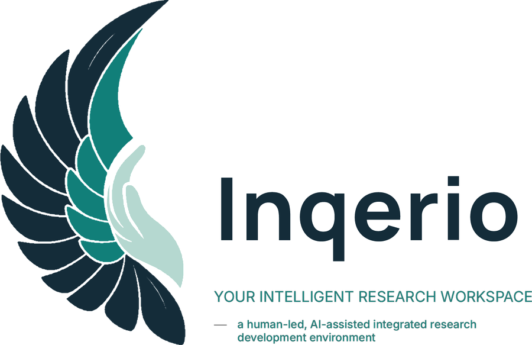
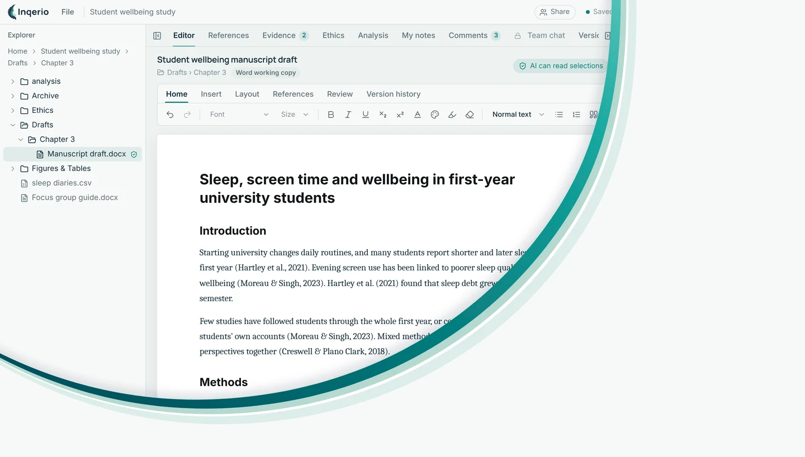

Write
A manuscript editor built for research: tracked changes, comments, versions you can return to, one-click US, UK, Canadian or Commonwealth spelling, a dictionary at hand, and export to Word.

Write the manuscript, manage references, run systematic searches, analyse data and prepare ethics in one desktop app, with AI that helps and never takes over.
Join the betaSee plans and prices
Beta 8, October 2026. Free to start, no account needed, and your files stay on your computer.

Works with the tools you already use
Statistics
Documents
Literature
Each stage of a study in one place, so the evidence, the analysis and the writing stay connected to one another.
A manuscript editor built for research: tracked changes, comments, versions you can return to, one-click US, UK, Canadian or Commonwealth spelling, a dictionary at hand, and export to Word.
Your references and citations in the same place as the writing, in any of 17 styles from APA to Vancouver. Change the style and every citation follows.
Documented, repeatable searches of PubMed, Europe PMC, OpenAlex and more, with screening, extraction and the PRISMA 2020 flow diagram.
Statistics in your own R, Python, Stata, SAS or SPSS, or in Jupyter notebooks, tied to an analysis plan - with a guided builder that takes you from data to a running script when you want direction. Thematic, framework and other qualitative approaches too, from transcribing the interviews to the write-up.
A consultant that reads your protocol and consent form, finds where they disagree and checks them against TCPS 2, CIOMS or your board’s checklist.
Free AI that runs on your own computer. It reads only the files you allow, and participant data is never sent without your consent.
The analysis workbench grows up: a guided path from question to verdict, plans that keep you honest, and reviews from search to statement.
From a data file to a running script, step by step: your hypothesis worded with AI and approved into the plan, variables in plain roles, every suitable test with when to choose it, the standard checks ticked for you, and a commented script in R, Python, Stata, SAS or SPSS that runs outside Inqerio too.
The checks you tick run with the script and print their results, and AI reads each one into plain language with a clear verdict on whether the test holds up. Advisory by design - the checks and the decision stay yours.
Under each test sit the alternatives for when the diagnostics argue back: robust and quantile regression, penalised logistic, zero-inflated counts, stratified Cox and more, each saying when to reach for it.
Keep an analysis plan per paper or per analysis. Click one open, mark the working plan your checks and departures follow, and watch a new plan fill itself as you build.
No statistics program on the computer? Inqerio installs R or Python for you: the official installer, checked against its digital signature, for your user only, with no administrator rights needed.
Documented searches, screening, appraisal and extraction, PRISMA 2020, PRISMA-ScR or ROSES flow diagrams, study and risk-of-bias tables for your manuscript, and an honest statement of where AI assisted.
Fitted models carry readable names, every estimate is explained in plain language with how strong the evidence is and how well the model fits, and results inserted in the manuscript tell you when a rerun changes the numbers.
Projects, documents, data and notes are ordinary files in folders you choose. We never have a copy of your work.
Prices in Canadian dollars. Cancel any time. Your work is never locked. Compare the plans in detail.
Writing, references and local AI, for as long as you like.
CA$0
No account needed.
Everything for carrying out a study on your own.
CA$12 a month
or CA$120 a year, two months free. Plus sales tax where it applies.
Subscribe in the app, under Your account.
Pro, plus working on projects with your colleagues.
CA$18 a month
or CA$180 a year. Share projects with up to five people: they join free and can use every part of Inqerio inside them. Need more on one project? Five more places for CA$29, once. Plus sales tax where it applies.
Subscribe in the app, under Your account.
Beta 8 is free to start on Windows, and your files stay on your computer.